Also in this case, the documentary American Moon formulates its question starting from imprecise and misleading premises. Saying "that the sun should illuminate the whole ground with the same intensity, both the nearest and the farthest one", involves an unacceptable simplification at least if we want to deal with the subject in depth. This statement is justified only when the Sun is sufficiently high in the sky, as happens in the image presented by the documentary, where the shadows of the stones are so small that they are almost hidden from view,
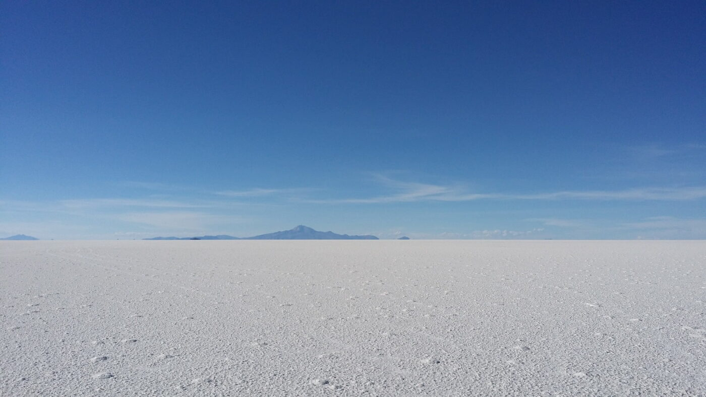
however, looking carefully at the same image, you can see that the statement is not entirely correct even in this case, in fact the nearby ground is darker than the distant one, because although reduced by a sun high in the sky, the shadows of the visible stones tend to darken the surface. So we touch again with our hands the level of superficiality with which the documentary selects its sources.
If American Moon had done a little research on images of deserts at sunrise or sunset, they would have discovered that things are very different and although the sun always illuminates the ground evenly, the observer will notice that the intensity of the reflected light differs greatly from one area of the ground to another. So we will call the albedo change of a homogeneous terrain as the backscatter change.
Here we see three images of different deserts.
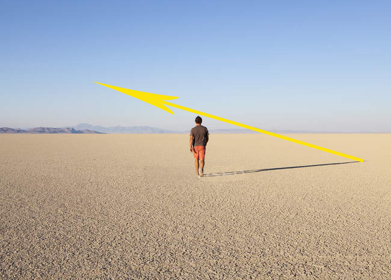
{kind=link}
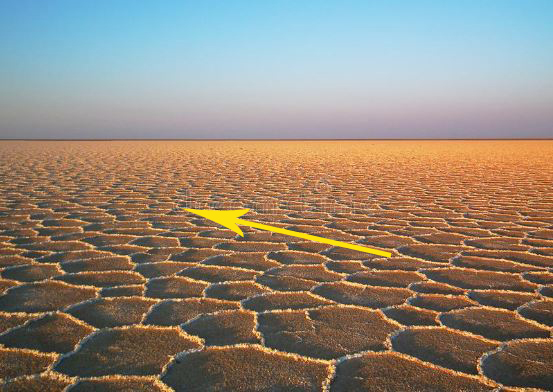
{kind=link}
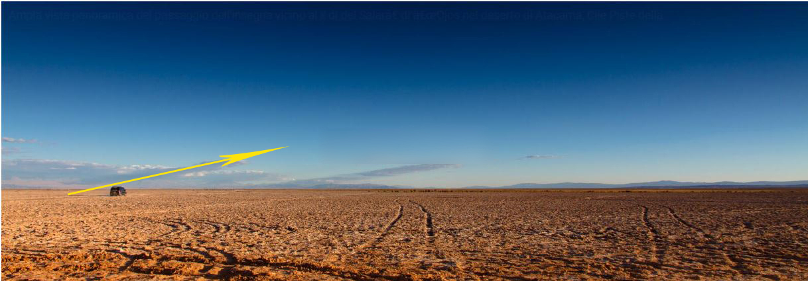
{kind=link}
I think that no one can doubt that all three are deserts illuminated by sunlight and not by artificial lighthouses, yet the back-diffusion of the terrain is very differentiated, and this despite the fact that the terrain is absolutely homogeneous. We put an arrow to indicate the position of the Sun, and this in order to be able to analyze the phenomenon on Earth and demonstrate that it is identical to the lunar one, the same phenomenon that the documentary mistook for a non-existent hotspot and fall-off effect produced by artificial lighthouses.
From the images we can see that the ground is darker on the side of the Sun, and lightens in the opposite direction. Why does this happen? The concept is simple: if the observer has a position that allows him to see the shadow of grains, stones or irregularities in the ground, he will see that darker ground. On the other hand, the part of the ground that does not show (thanks to its position) shadows of grains or pebbles to the observer, will be clearer.
It is therefore the visible or hidden shadows, made more evident at dawn and dusk, that will determine the amount of light reflected from the ground. In the first of the three images, for example, the dark dots produced by the shadows between the pebbles on the left side of the photo are evident, a speckle that then decreases on the right side, because the position of the grains and pebbles will tend to hide their shadows.
In this image below, taken from the documentary of Canet's channel, the phenomenon is well highlighted:

Given the position of the sun, on the left side of the image we will see more shadows than the stones, and the ground will appear dark. On the right side we will see less shadows and more the illuminated parts of the stones and the ground will seem clear. The moon photo AS15-82-11085 on the right details the exact same false hotspot and fall-off effect.
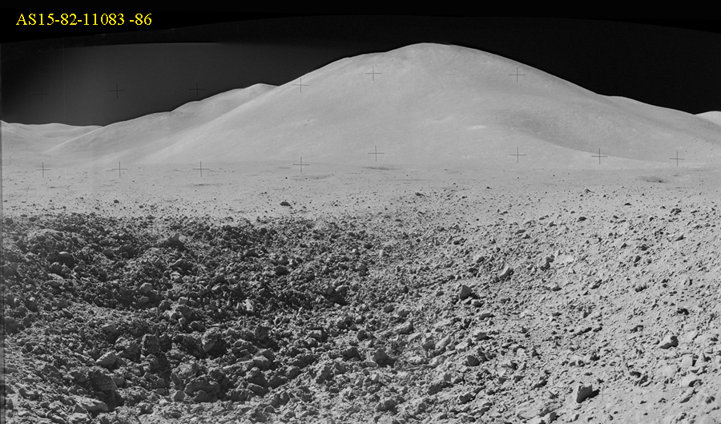
Having understood this concept, we can draw the general rule: in photos taken at sunset or sunrise, when the shadows are more accentuated, they will tend to darken the ground placed under the position of the Sun, while the ground located on the opposite side of the sun will be brighter. To understand at a glance how the brightness will be distributed, just see the direction of the shadows and that direction will indicate the brightest region of the ground.
Let's add another image below with very long shadows of people in a saline desert and where the direction of the shadows clearly indicates where the brightest terrain is.
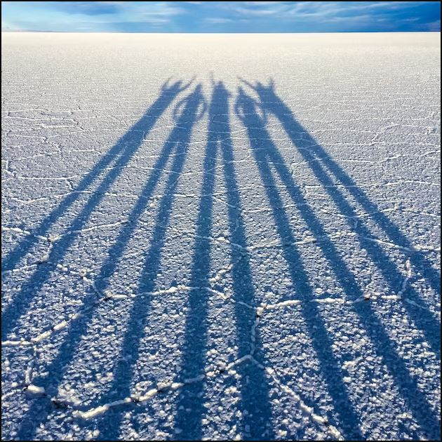
In fact, in this photo, due to the low position of the Sun on the horizon and placed behind the figures, there is a difference in the backscatter on the ground comparable to that of the lunar photos.
Now let's analyze the photo in question 32. In the visor of Aldrin's helmet you can see Armstrong photographing him and the shadows of both astronauts stretch towards the brightest part of the ground, exactly as in the terrestrial photos taken at sunrise or sunset over the deserts.
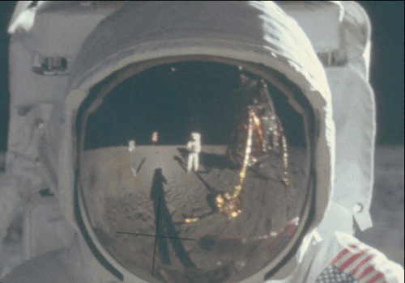
Note that the brighter ground visible in the helmet reflection is not caused by the Heiligenschein effect, which is a circular halo reminiscent of the halos of saints (hence the name) that surrounds the shadow of the photographer with the sun behind him and does not illuminate all the ground behind

Having explained the brightness present in the visor of the helmet, now let's try to explain why the ground just behind Aldrin is brighter than the one in front of him and brighter than the one in the background.
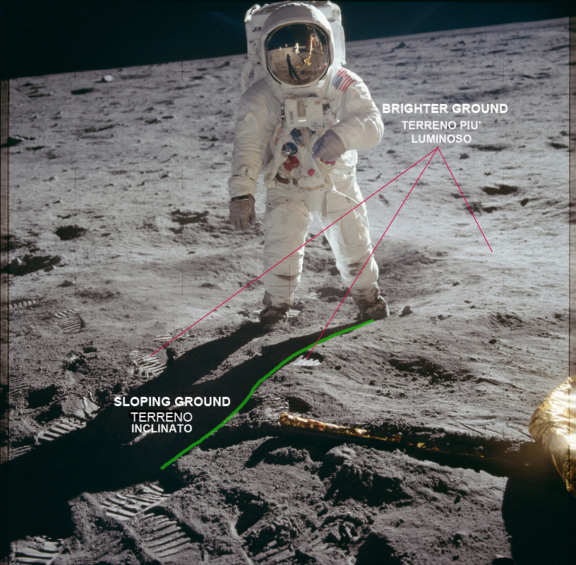
Meanwhile, let's clarify that this brightness of the terrain categorically excludes the hotspot effect of a cinema spotlight, as no spotlight could make two hot spots at the same time, one filmed from the visor and the other behind Aldrin, simply because it would take two spotlights and consequently we would have had the shadows doubled, which is not noticeable at all.
Now let's look at the footprints in this photo:

Why are they so much clearer? For the same phenomenon that determined the light of the ground behind Aldrin, even if the phenomenon was produced by two different causes. The boots compressed the regolith, and this brought the grains closer together, smoothed them out, reducing the shadows between them. This improved the reflective property of the footprint by decreasing its shadows and making them brighter than the adjacent terrain. The brightest part behind Aldrin was determined by the sweeping of the gases of the engine on the moon which, although not making holes, smoothed the surface part of the regolith by reducing the micro shadows present between the grains.
This explanation differs from the one given by Attivissimo which assumed the emergence of lighter ground. The sweeping on the regolith produced by the engine gases, on the other hand, perfectly explains the different brightness that is superimposable on that of the footprints. Last thing: the particular darkness of the ground in front of Aldrin is determined by two concomitant factors: the first is the slight inclination of the ground in the opposite direction to the sun which has accentuated the shadows between the grains and is well highlighted both by the curvature of Aldrin's shadow, and by this larger image with an undulation in the ground.
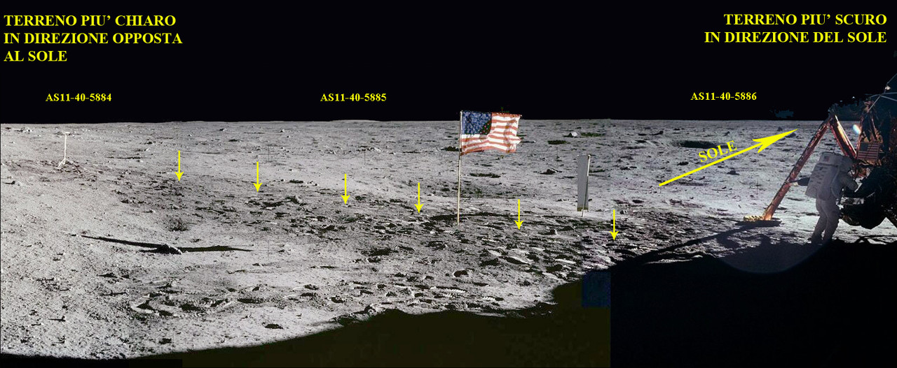
The second factor is the darkening effect due to the displacement of the regolith caused by the astronauts' steps, which accentuates the irregularity all around the pressed regolith footprints which instead remain lighter, as you can see perfectly in this image below.

Dark terrain which, however, attenuates a lot if the phase angle is in opposition, where thanks to the concealment of the shadows between the grains, it makes the ground itself appear of a brightness comparable to the surrounding one.
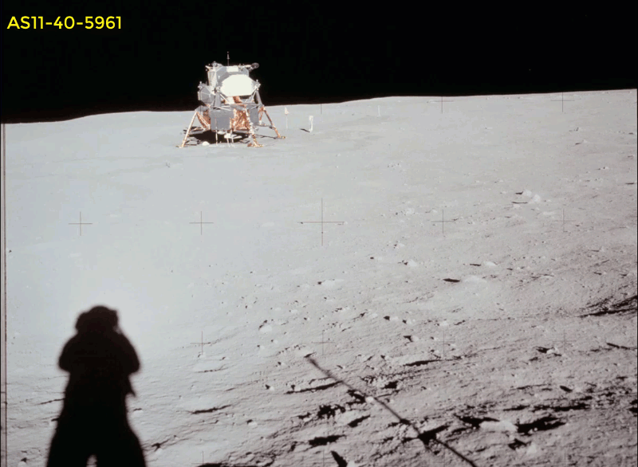
As we have demonstrated, the conspicuous falls of light cannot be caused by an underpowered beacon used by NASA on a film set, a ridiculous hypothesis and without any evidence, also because in other missions, with the sun much higher on the horizon, there are landscapes without any fall of light, such as this one: (third EVA Apollo 16)

and like this one from Apollo 17 (AS17-141-21590/21602)

so the light falls depend exclusively on the variable brightness as a function of the phase angle that returns the regolith illuminated by a very low sun on the horizon.
Even the photo presented by the documentary (AS11-40-5851) as anomalous has an explanation:
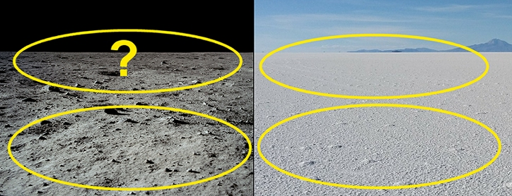
Just put it in its context and the backscatter rule is respected:
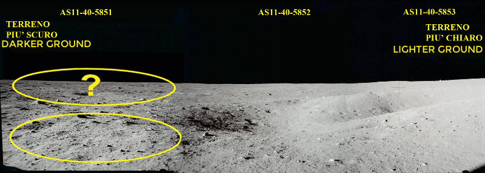
Referring to the explanation given in the previous answer, the image attached to question 33 is also perfectly explainable.
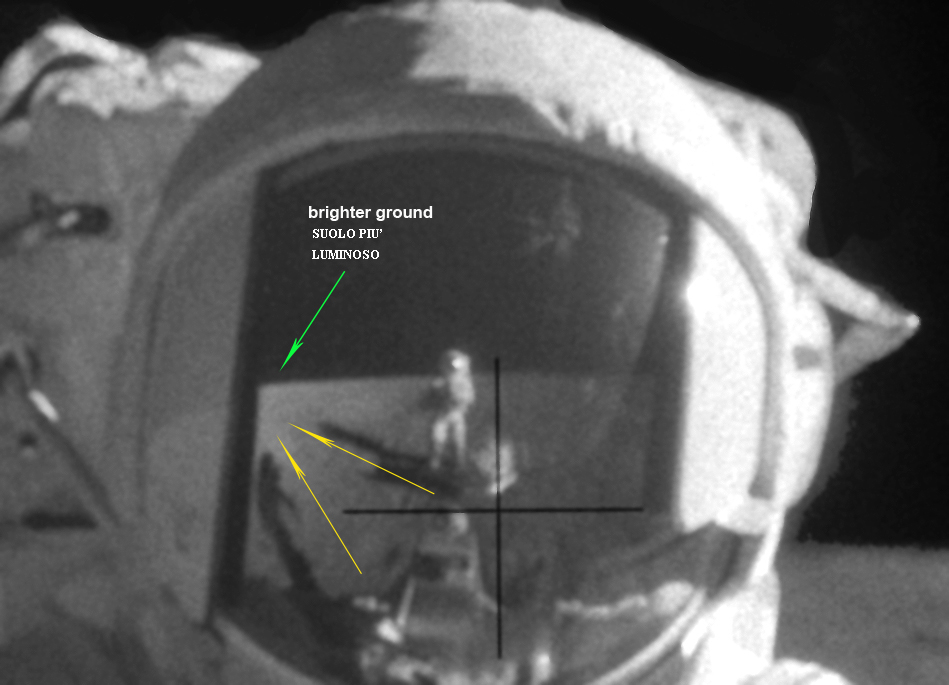
As we can see, the brightest part present in the reflection of the helmet follows the law of backscatter and is opposite to the sun (which by the way can be glimpsed in the reflection of the helmet just above the darkest area) and as already explained the shadows of the two astronauts extend towards the lighter area, exactly as in all the other examples we have analyzed.
Here we add another terrestrial image to confirm the phenomenon described.
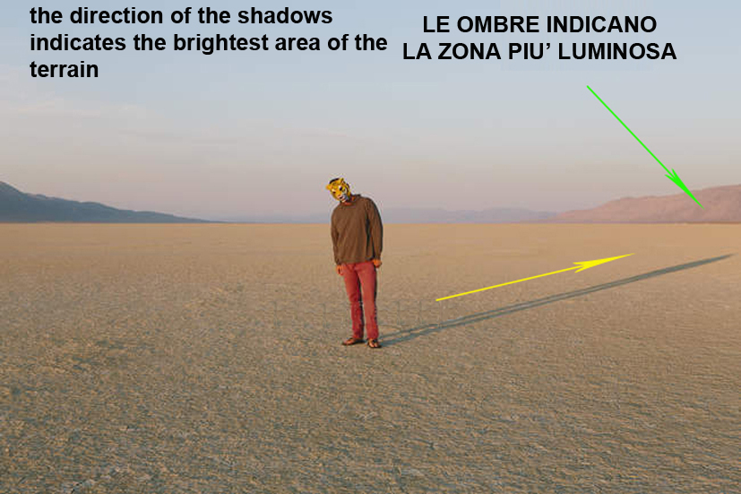
{kind=link}
Then to further confirm we enlarge the image around the helmet,
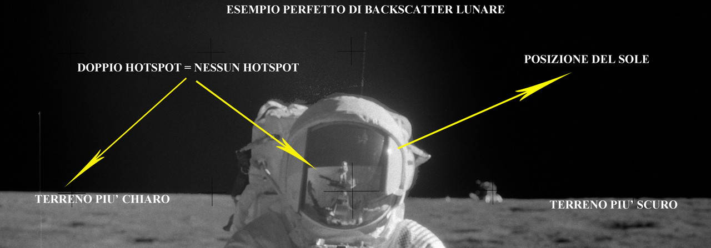
and we notice that the same phenomenon is reproduced also behind the astronaut and this categorically excludes a lighthouse hotspot effect, but where it is the whole right side of the photo that is less bright than the one on the left, in perfect agreement with the position of the Sun that is on the right.
As we have demonstrated, these conspicuous falls of light mistakenly mistaken for hotspots and fall-offs from movie lighthouses, are typical not only of the lunar terrain when the sun is very low, but although weaker by the brightness coming from the sky, they are also present in terrestrial sunrises and sunsets, in desert landscapes with uniform terrain up to the horizon.
This effect is well known by astrophotographers, but also by landscape photographers, is called backscatter. If the photographic consultants interviewed by American Moon had also been landscape photographers, they would probably have recognized the backscatter effect that is present in many terrestrial photos taken with the sun low, as can be seen in this comparison proposed below with four images, two of which taken in the same desert.
The first has the sun high and no shadows between the salt crystals, so there is no variation in the backscatter, while the other was taken at sunset, with accentuated shadows between the salt crystals and where the part of the ground opposite the sun is brighter. Below are two lunar photos that reproduce the same effects, namely one the homogeneous brightness of the ground with the high sun of the third EVA of Apollo 17 and the other with the strong backscatter of Apollo 12, during its first EVA, where the sun was particularly low on the horizon.
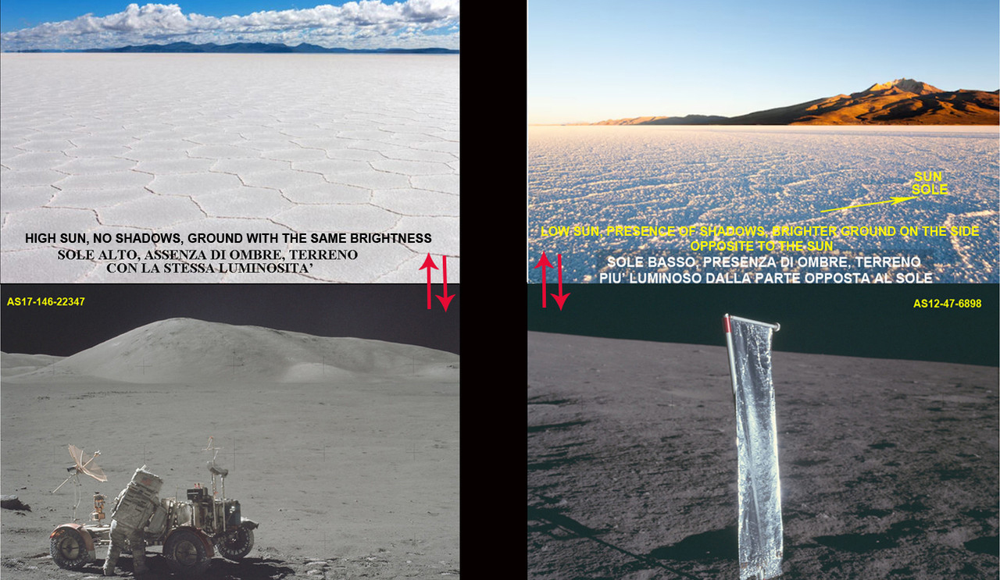
As we can see, only by having the indispensable knowledge of optical phenomena related to brightness dependent on the phase angle, it is possible to identify and explain the characteristics of lunar photos that we remember are astrophotographs in all respects and as such must be studied and interpreted.
Chapters: